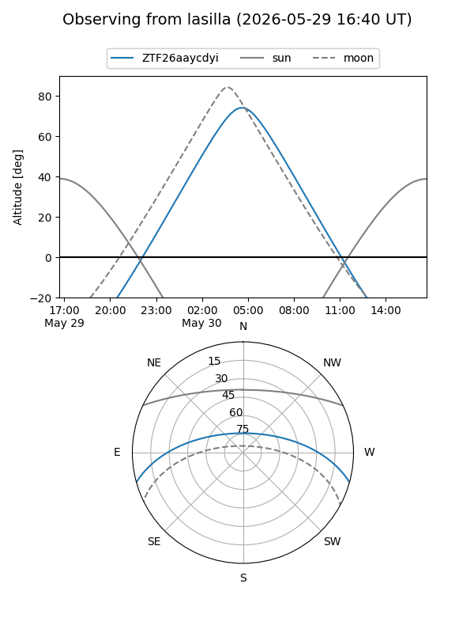
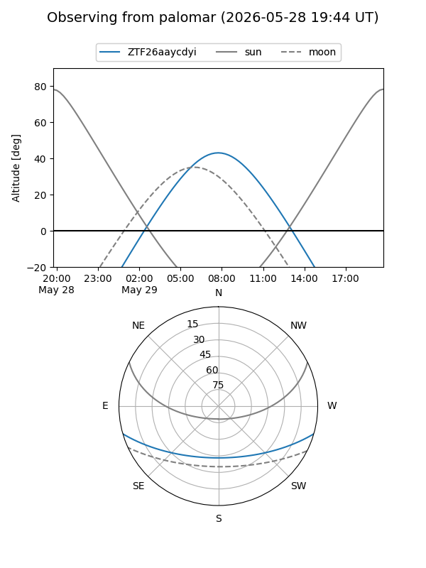

ZTF26aaycdyi
Target ZTF26aaycdyi at 2026-05-29 12:16
Aliases and brokers:
lsst-FINK: link
lsst-Lasair: link
lsst-ALeRCE: link
ztf-FINK: link
ztf-Lasair: link
ztf-ALeRCE: link
alt names
ZTF26aaycdyi (ztf,fink_ztf)
Coordinates:
equatorial (ra, dec) = 245.6765,-13.43702
equatorial (HMS+DMS) = 16:22:42.36,-13:26:13.26
galactic (l, b) = (1.4325,+24.65742)
Flags:
Photometry:
last ztfg=19.67
2 ztfg detections
Lightcurve
Visibility


Additional plots